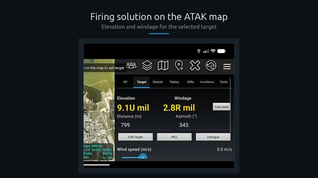
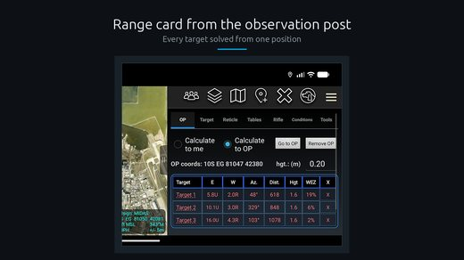
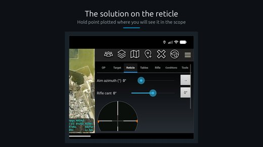

SniperTAK
Wtyczka ATAK-CIV
Kalkulator balistyczny wbudowany w mapę ATAK-a. Liczy poprawkę na odległość i wiatr, uwzględnia gęstość wysokości, rysuje punkt obserwacyjny.
Po co to jest
Strzelec na dystansie liczy poprawki w osobnym kalkulatorze, a położenie celu ma na mapie w ATAK-u. Przepisywanie współrzędnych między jednym a drugim zabiera czas i wprowadza błędy.
SniperTAK liczy poprawkę na tym samym ekranie, na którym leży cel. Odległość i azymut bierze z mapy, nie z klawiatury.
Co liczy
Poprawkę pionową i poziomą dla wybranego naboju i lufy. Model uwzględnia gęstość wysokości, czyli łączny wpływ temperatury, ciśnienia i wilgotności na opór powietrza.
Gęstość wysokości jest modelem empirycznym, nie pełnym rozwiązaniem atmosfery. Dane wejściowe są ograniczone do zakresu, w którym model był sprawdzany: temperatura od −20 do 50 °C.
Wtyczka rysuje też punkt obserwacyjny na mapie i wysyła jego położenie do pozostałych uczestników sieci.
Skąd biorą się dane pogodowe
Warunki można wpisać ręcznie albo pobrać z wiatromierza Kestrel. Protokół Bluetooth Kestrela nie jest opisany publicznie, więc odtworzyłem go od zera, nasłuchując transmisji. Opis protokołu jest częścią moich notatek z rozkładania sprzętu na części.
Znany błąd
Podczas przenoszenia silnika balistycznego na komputer wyszło, że całkowanie toru pocisku jest ucięte po czterech sekundach lotu. Powyżej mniej więcej 1600 metrów wyliczona elewacja zaczyna maleć zamiast rosnąć. Na dystansach poniżej tej granicy wynik jest poprawny.
Zrzuty ekranu


